Contents
- 1What the Sweep is, and why nowWhy it is happening now, and where your answers go
- 2Why this matters to youThe case for doing this well, written for the person who owns the courses
- 3Before you startWhat to have ready, and the one rule to remember
- 4The Sweep at a glanceWhere everything is
- 5Reviewing a course, step by stepFrom picking the course to clicking Submit
- 6What the questions are askingEach block of the Sweep, and how to answer it
- 7Prerequisites and corequisitesWhich requirement fits, and how to build it in the Sweep
- 8When Confirm as written is unavailableThe four reasons, and what to do instead
- 9After you submitDean review, the approval chain, and the status marks in the Sweep
- 10Your division's list in SharePointWhere each course's files are kept, and who is working on what
- 11Fixing a returned courseStart from previous submission
- 12Common questionsThe ones we expect to hear most
- 13Who to contactThe people behind the Sweep, and what each one covers
1What the Sweep is, and why now
The Course Inventory Sweep is a review of every active academic course at BPCC by the Program Directors who own them. That is 742 courses across the four divisions, drawn from the Banner extract dated October 6, 2026. Each one is confirmed as written, updated, or retired, and each review adds information about the course that the college has never collected in one place.
Why now
BPCC is moving its curriculum and catalog to Watermark Curriculum Strategy. The new catalog will be built from the course records BPCC holds today, and Watermark's discovery and build work begins in January 2027. A course reviewed before then moves into Watermark from an accurate record. A course nobody reviews moves in exactly as it reads today, and correcting it later turns into cleanup during the build rather than a decision the program makes now. The Sweep is the first step in that move, and Program Directors will have more to review and decide in Watermark as it is built and launched.
Watermark is not new to BPCC. The college has long used it for end-of-term course evaluations, and last year it adopted Watermark Planning & Self-Study, which is rolling out now for collecting course learning outcomes and preparing accreditation reports. Curriculum Strategy is a different part of Watermark, and the one the Sweep prepares for. It is where course and program proposals will move through review and approval, and where BPCC's catalog will be built and published, beginning with a soft launch in Summer 2027.
What your answers are used for
Every review does two jobs at once.
Bringing today's records up to date
Once your Dean approves a review, the Registrar's Office enters the changes in Banner and Rachael Carter enters them in Degree Works. Academic Affairs then updates the public catalog, and an updated edition of the current 2026-27 catalog in mid-January will carry many of the changes submitted during the Sweep.
Collecting what a modern catalog needs
Much of what students and advisors want to know about a course has never been gathered in one place, from where it is taught and which terms it runs to its restrictions, costs beyond tuition, Industry-Based Certifications, Louisiana Common Course Number, and the general education competencies it builds, including where AI is present. The Sweep collects it for a catalog that is open about what each course involves. Most of it will first appear in the Watermark catalog.
Timeline
| Now | The Sweep is under way. Program Directors review the courses in their programs in the Sweep. |
| December 10, 2026 | All course reviews due by 4:30 p.m. Central. A division's Dean may set an earlier date. |
| January 2027 | In mid-January, Academic Affairs publishes an updated edition of the current 2026-27 catalog with changes submitted during the Sweep, while most of the new information waits for the Watermark catalog. Watermark discovery and build also begin. |
| Summer 2027 | Soft launch of the Watermark catalog and Watermark Curriculum Strategy. |
| Fall 2027 | Watermark Curriculum Strategy and the Watermark catalog fully implemented. |
Reviews are due Thursday, December 10 at 4:30 p.m. Central, and your Dean may set an earlier date. Working a few courses at a time, in your program's order, is the easiest way to get there.
The three things that can happen to a course
| Choice | When to pick it | What it needs from you |
|---|---|---|
| Confirm as written Accurate as it stands | The Banner record is right: title, hours, prerequisites, corequisites, grade modes, schedule types, instructional methods, CIP, and description. | The information questions: classification, repeating for credit, competencies, locations, restrictions, fees, and IBCs. A confirmation is a full review, not a shortcut. |
| Update Something needs to change | Anything in the record is wrong or out of date, or the description holds more than what the course covers (section 6). | Only the fields that change (blank means no change), the effective term, and the information questions. |
| Retire Should not carry forward | The course should not be in the new catalog. | Last term offered, the reason, any replacement, whether an active program still requires it, students in progress, and a teach-out note. |
2Why this matters to you
No one at BPCC knows your program the way you do. You know which courses run every fall, which ones depend on a lab alongside them, where each one is taught, and which certifications students carry out the door. The Sweep is how that knowledge reaches the record students and advisors read every day. Each report carries your name, because these are your courses.
Keeping it accurate is part of owning a program, and it pays back in places you already deal with every week.
Students read your courses before they read anything else
The catalog entry is often a prospective student's first look at your program. A description that still carries a statewide numbering sentence, a prerequisite that reads like Banner code, or a missing online or regional campus listing costs you students you never hear from.
Advisors build plans from what the record says
Prerequisites, corequisites, and term availability drive every degree plan an advisor writes. A wrong or incomplete record means a registration error, a petition, or a lost semester for one of your students. Accurate rotation detail lets advisors sequence your courses correctly.
Accreditation reads the same record
SACSCOC and your program-level accreditors look at credit hours, CIP codes, and the general education competencies a course develops. The Sweep records those competencies measure by measure, which is the evidence base for the next reaffirmation and for program-level review cycles.
Certifications, transfer, and reporting depend on it
Industry-Based Certifications (IBCs), the PLA matrix, and Louisiana Common Course Numbers feed state reporting and transfer. The Sweep asks about each, including how an IBC exam fits the course, and records where AI is present so BPCC can report and advertise it accurately.
Your program, as it opens in Watermark
Your courses move into Watermark from the record the Sweep leaves. A course you review starts there the way you would explain it to a student. One nobody reviews starts there exactly as it reads today.
A one-time ask with a lasting payoff
This course-by-course review is meant to happen once, but it starts your work in Watermark rather than finishing it. You will still review your courses and programs there, beginning from the record you build now.
Each course takes a few minutes. Confirming a course that is right is as valuable as fixing one that is wrong, because a confirmation tells the college the record can be trusted. Every answer you give is one fewer question Academic Affairs, the Registrar, or an advisor has to guess at later.
3Before you start
Have these ready
- The link. The Sweep lives at sweep.joebrownlee.com. It opens in any current browser, with nothing to sign in to. A laptop or desktop is easiest, since each course ends with two files to attach to the submission form.
- Your program's course list. The Sweep lists courses by division, not by program, so keep your own list beside it. Some programs have courses all their own, such as HACR, ENGR, CULA, or FRSC. Others share a common set of courses that feed many programs, such as AMFG, CTEC, or BLGY. When a course is shared across programs, the Dean of the division where it lives assigns its review. For general education courses, that Dean may ask a group of faculty to contribute, and one person still submits the review with their own BPCC email.
- Your BPCC email address. Each report asks for it. If your Dean returns a course, the note comes to that address.
- Your division's list in SharePoint. Every course produces a PDF report and a submission file. A few minutes after you submit, both arrive on that course's row in your division's list on their own (section 10). The list is the division's shared record, so nothing is lost and everyone has a clear line of sight into what has been completed. Because the Sweep keeps nothing, those files are the record of what you have submitted.
The Sweep saves nothing. It keeps no record of your work between visits, on purpose, so that the only record of a course is the PDF and the submission file you save and submit. Finish each course by saving its files and submitting them before you close the tab or refresh. If you stop partway through a course, that course starts over next time.
If a report won't save
The Sweep saves each report as an ordinary download, so there is nothing to set up first. If a report or its submission file ever will not save, open How this works from the header and click Run the download check under Trouble saving a report? It saves two small test files the same way the Sweep saves each report: a one-page PDF that reads Test passed and a matching file ending in .json, both named CourseSweep_Test_Passed_DELETE. If both reach your downloads folder and the PDF opens, the computer can save the Sweep's files, so try the report again. Delete both test files, since they are not a submission and never go on the form.
If the check says a file was not saved, or the files never reach your downloads folder, that computer's settings are stopping downloads. Use another computer for the Sweep, and if it is a BPCC classroom or lab computer, let Joe Brownlee know which room.
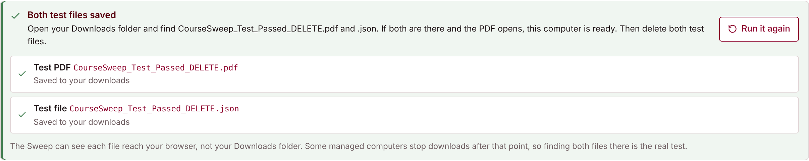
What happens on your screen
When you click the save button, the Sweep saves the PDF and the submission file straight to your browser's downloads folder, named by the course and a time stamp. Depending on the browser, they may show in a download bar or ask where to save, and either is fine. The save button then turns into Open the submission form, which opens a short form in a new tab with the course already filled in. You attach the two files and click Submit. The confirmation page names your Dean, who reviews the report first, and has a button to your division's list in SharePoint.
The downloads folder is only a stop on the way. A few minutes after you submit, both files arrive on the course's row in your division's list in SharePoint, with nothing for you to attach (section 10). That list is where your Dean and colleagues can see them, and it is the first place to check whenever you need a course's files again, including when a course comes back for changes. Once they are there, you can delete them from your computer.
The Sweep itself stays open in its own tab, so once the form is submitted, you can go straight to the next course.
4The Sweep at a glance
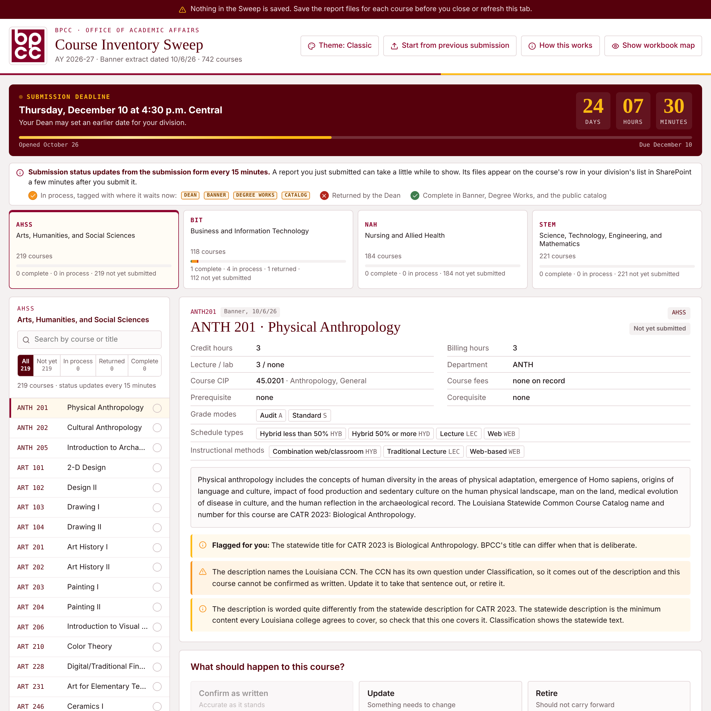
1 2 3 4 5 6 7 8The header buttons
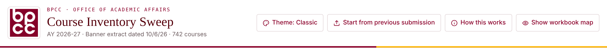
| Theme | Changes how the Sweep looks: Classic, High contrast (projectors and bright rooms), Game day, Night, and Color-safe (blue and charcoal in place of green and rose, for color vision). The PDF reports look the same in every theme. The choice lasts for the visit. |
| Start from previous submission | Loads a submission file you saved earlier, bringing back every answer for that course. Section 11 covers it. |
| How this works | Opens a six-step summary at the top of the Sweep, with a button for each division's list in SharePoint and the download check. |
| Show workbook map | Shows which column of the original review workbook each question maps to. It is there for Academic Affairs and the Registrar. |
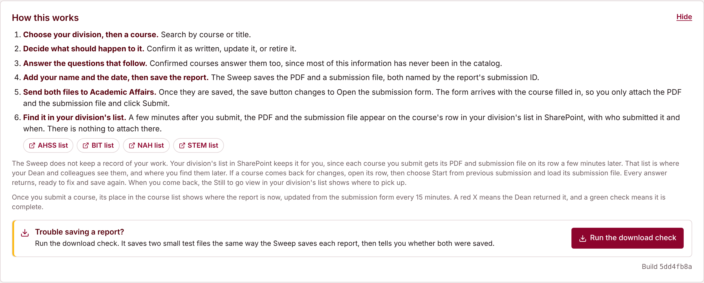
5Reviewing a course, step by step
Seven steps, start to finish. The first course takes longest. By the third, the rhythm is familiar.
- Pick your division, then the course.Click your division's tile, then search the list by course number or title and click the course. The list keeps your place as you move through it, and Previous and Next at the very bottom step through the division in order.
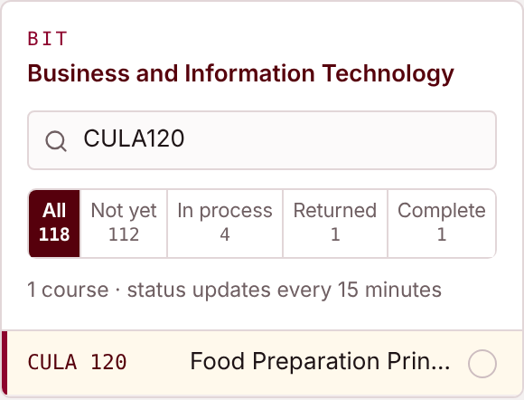
The course list for a division, with search and the status filter. - Read the Banner record.The top card shows what Banner holds today: hours, department, CIP, fees, prerequisites, corequisites, grade modes, schedule types, instructional methods, and the description. Below it, the Sweep flags anything it found, such as a description that names the Louisiana CCN, a title that is probably truncated at 30 characters, or a schedule type the Registrar has retired. Read the flags, and the description itself (section 6), before you decide.
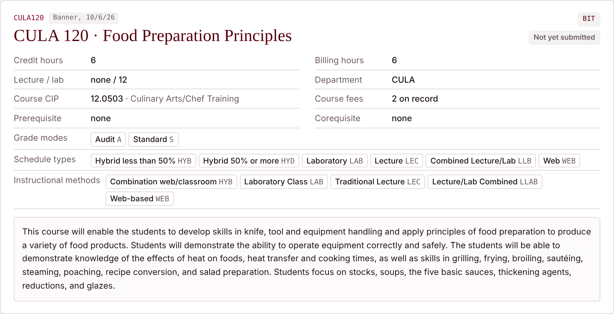
The Banner record. Flagged for you notes appear under the description when the Sweep has something to point out. - Decide what should happen to it.Choose Confirm as written, Update, or Retire. Then answer whether a report for this course has already been submitted. For the first pass through your courses the answer is No, this is the first submission. The other answer is for a replacement, which section 11 explains. If the course already has a report on record, the Sweep answers Yes for you and fills in that report's submission ID.
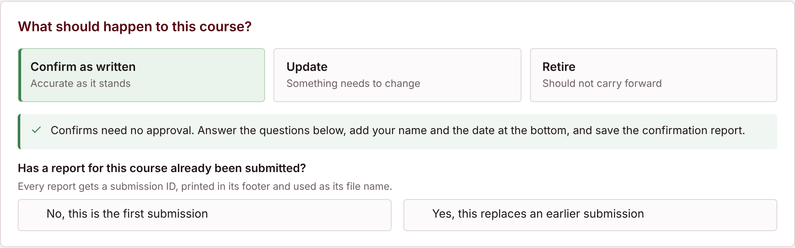
Confirm as written chosen. The submission question appears for every disposition. - Answer the questions that follow.The blocks below the disposition ask what the catalog has never carried. Section 6 walks through each one. As you work, the box at the bottom of the Sweep lists anything that still has to be answered before the report can be saved. Orange warnings are advice and never stop a save; the red list does.
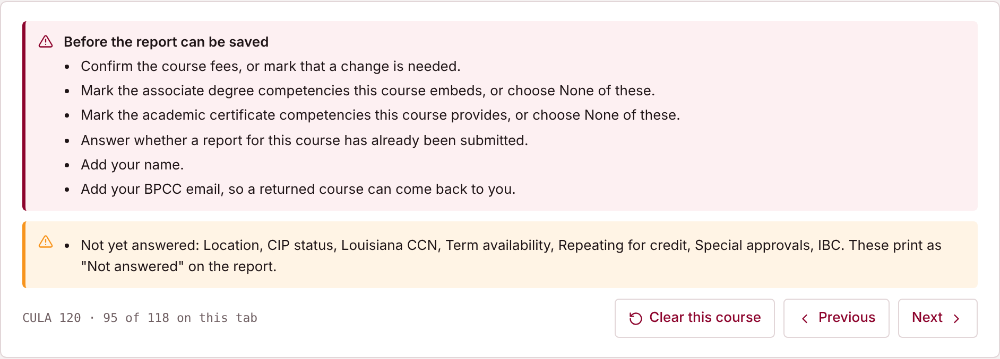
The bottom of the Sweep just after choosing a disposition. The red list shrinks as you answer, and the save button appears when it is empty. - Sign and save.Enter your name, your BPCC email, and the date, and add any notes to Academic Affairs. Your name and email carry to the next course for the rest of the visit. When nothing is left on the red list, the save button appears. Click it, and both files save to your downloads folder.
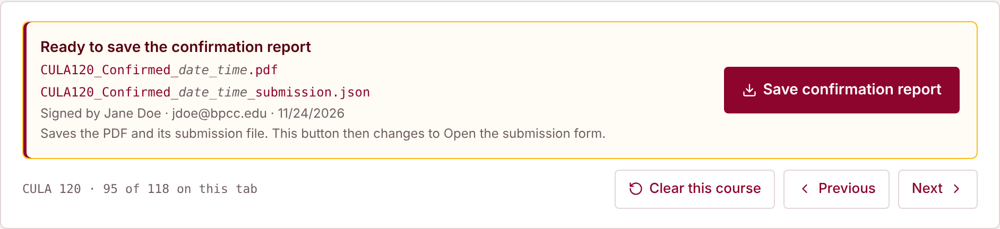
Ready to save. The box names the two files that will be saved and who signed. - Open the submission form and attach both files.Once both files are saved, the save button's spot becomes Open the submission form. It opens a new tab with the course, title, division, disposition, effective term, your name, the date, the PDF file name, and your email already filled in. Attach the PDF to the PDF Report question and the submission file (the one ending in _submission.json) to the .json File question, then click Submit. The confirmation page reads Report received, names your Dean, who reviews it first, and has a button to your division's list in SharePoint.
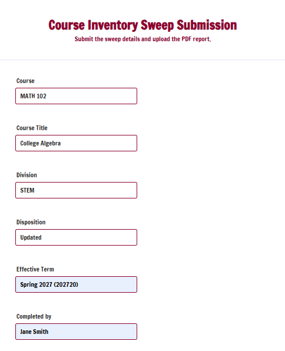
The submission form as it opens. Every detail is filled in from the Sweep. 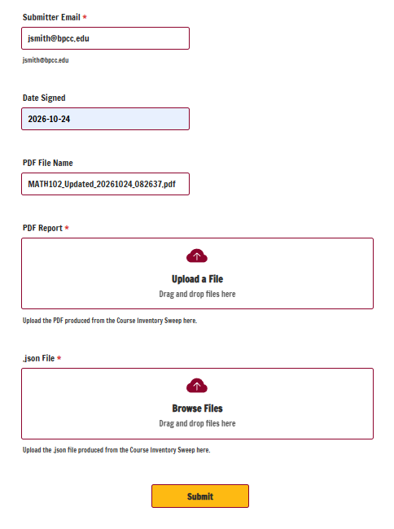
Further down the form. Attach the PDF to PDF Report and the submission file to .json File, then click Submit. 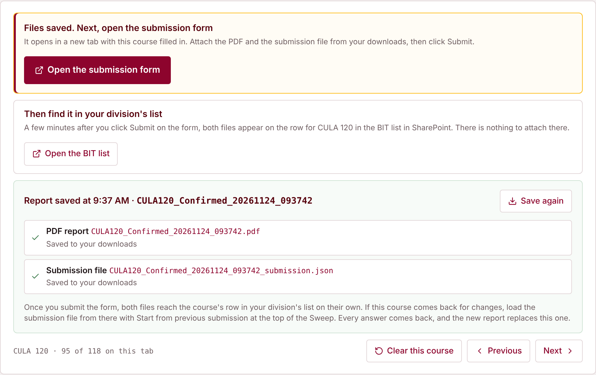
Back in the Sweep, Open the submission form sits where the save button was, with a button to your division's list just under it. The panel below lists each file and offers Save again. If a file did not save, it shows Not saved with a Try again button, and the form note says it needs both files. - Move to the next course.There is nothing to attach in SharePoint. A few minutes after you submit, the PDF and the submission file appear on the course's row in your division's list, with Submitted as, Date submitted, and Submitted by filled in (section 10). To look, use the button that opens your division's list (Open the BIT list, for example), under the form button in the Sweep or on the confirmation page. Then click Next in the Sweep or pick the next course from its list. Your name and email are already in place.
The Sweep notices. A note says the files no longer match your answers and the save button comes back. Save again, and if the earlier files were already submitted, choose Mark it as replacing the earlier ID so Academic Affairs knows which report to keep. If you never submitted the earlier files, leave it as a first submission and discard them.
6What the questions are asking
Each block of the Sweep, in the order it appears. Not every block shows for every course: Update detail appears only for updates, Retirement only for retirements, and the Laboratory withdrawal block only for lab courses.
Submission
Has a report for this course already been submitted? Answer No, this is the first submission the first time through. When Academic Affairs already has a report for the course, the Sweep answers Yes, this replaces an earlier submission for you as soon as you choose a disposition, and fills in the newest report's submission ID, so a resubmission always names the right report. If you answer No anyway, a note shows the ID with a one-click Mark it as replacing (section 11 shows it).
For a course the Sweep shows no report for yet, choose Yes when you are resubmitting and paste the earlier submission ID (the PDF's file name works, with or without .pdf). If you do not have it, check I don't have the earlier ID and Academic Affairs will match it by course.
Update detail (updates only)
Fill in only what changes. A blank field means no change, not an oversight. The block has a row for each part of the record: title (the Banner title of 30 characters or fewer, plus a full display title of up to 100), hours, grade mode, schedule types, instructional methods, prerequisites, corequisites, an equivalent course, and the catalog description. Each row shows the current value, and most offer Start from current so you can edit what is there rather than retype it.
The Banner title prints on transcripts and holds only 30 characters, so many are cut off or abbreviated. The full display title holds up to 100, enough for the course's whole name in the catalog. Fill it in when the Banner title doesn't read as the course's real name. That is reason enough to choose Update, even when nothing else about the course changes.
| Banner title | Full display title |
|---|---|
| Local Adult Detention Faciliti | Local Adult Detention Facilities |
| Intro Human Anat & Physiology | Introduction to Human Anatomy and Physiology |
When the Banner title is at 30 characters or abbreviated, the Sweep flags it and prompts under Full display title, and confirming the course brings a reminder that it is worth an update. For a course with a Louisiana CCN, it also offers the statewide title with one click, a good place to start.
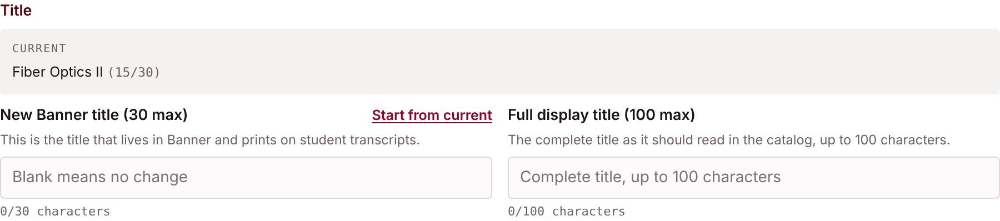
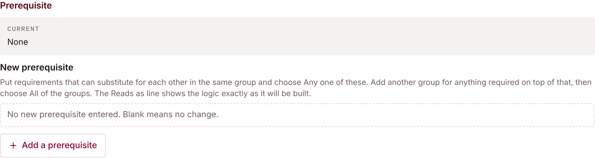
Two rows carry a red note when they change: credit hours and CIP code. Either one has accreditation implications, and the note asks you to work with Dr. Megan Bange before submitting. The note never blocks the save.
The catalog description
The description is what a student reads in the catalog to decide whether a course is right for them. It describes the course itself, so it reads the same for every section in every term, wherever and however the course is taught. Everything else the catalog says about a course, from prerequisites to fees, the Sweep collects in its own questions, and the new catalog will show each one in its own place.
What a description is
- The subject and major topics of the course, and the skills students build in it.
- The kind of work students do, such as lab, studio, field, or clinical work, described in words.
- Plain sentences for a student who is deciding whether to take the course.
- Short, usually two to four sentences and under 100 words. The Sweep cautions at 100.
CTEC 295, Software Development Process. This course provides a comprehensive overview of the core elements of the software development process, including common software development methodologies, source control, refactoring, and testing. This course also includes programming projects where the students work in teams.
LPNU 126, Nutrition for Practical Nurses. This course introduces the fundamental principles of nutrition and analysis of the relationship between nutrition intake and health maintenance and wellness for all age groups. Standard nutritional practices and their modification for therapeutic purposes are studied. Includes the role of the essential nutrients of proteins, carbohydrates, fats, vitamins, minerals, and water.
What a description is not
A sentence that states a rule, a requirement, a number, or a schedule almost always belongs somewhere else. Each of these has its own question in the Sweep.
| If the description says | Where it goes in the Sweep |
|---|---|
| The Louisiana CCN | Louisiana CCN, under Classification. Start from current takes it out for you (section 8). |
| Prerequisites, corequisites, or concurrent enrollment | The Prerequisite and Corequisite rows in Update detail. If Banner already holds the same requirement, leave them blank (section 7). |
| Cross-listing, or “only one will be accepted for credit” | Equivalent course, in Update detail. |
| Credit, lecture, lab, clinical, or other hours | Hours, in Update detail. Describing a lab or clinical part of the course in words is fine, and the numbers go in Hours. |
| Fall semester only, every other year, or another term note | Term availability, under Classification, with rotation detail when it applies. |
| “May be repeated for credit” | Repeating for credit, right after Classification. |
| Program admission, a background check, a drug screen, or another requirement to enroll | Enrollment restrictions, with the wording the catalog should show. |
| Instructor, department, or Dean approval | Special approvals, under Enrollment restrictions. |
| A campus, or online or hybrid delivery | Location, along with Schedule types and Instructional methods in Update detail. |
| Pass/fail or satisfactory/unsatisfactory grading | Grade mode, in Update detail. |
| Fees or other costs to students | Course fees. |
| A certification or licensing exam the course prepares students for | Industry-Based Certifications. |
| The lab withdrawal sentence | Laboratory withdrawal policy, on lab courses. |
| CLEP or other credit by exam | The PLA matrix, which the Office of Academic Affairs keeps. If the matrix needs a change, say so in Notes to Academic Affairs. |
| Learning outcomes, textbooks, grading, or attendance | The syllabus, since these can change from section to section or term to term. |
A description before and after
A sample, not a real BPCC course, carrying the kinds of sentences Banner descriptions hold today. Two sentences describe the course. The rest move to their own questions.
Prerequisite: MATH 102 or MATH 129 with a grade of C or higher. Introduces the science of the natural environment and how people change it, including ecosystems, water and soil quality, air pollution, energy resources, and land use. Laboratory work includes field sampling and water testing. Three lecture hours and two lab hours per week. ENVS 210 and ESCI 210 are cross-listed courses; only one will be accepted for credit. Offered in the fall semester only. Prepares students for a national water quality certification exam.
| Sentence in the description | Where it goes |
|---|---|
| Prerequisite: MATH 102 or MATH 129 with a grade of C or higher. | Prerequisites |
| Introduces the science of the natural environment and how people change it, including ecosystems, water and soil quality, air pollution, energy resources, and land use. | Stays. It says what the course covers. |
| Laboratory work includes field sampling and water testing. | Stays. It says what kind of work students do. |
| Three lecture hours and two lab hours per week. | Hours |
| ENVS 210 and ESCI 210 are cross-listed courses; only one will be accepted for credit. | Equivalent course |
| Offered in the fall semester only. | Term availability |
| Prepares students for a national water quality certification exam. | Industry-Based Certifications |
Introduces the science of the natural environment and how people change it, including ecosystems, water and soil quality, air pollution, energy resources, and land use. Laboratory work includes field sampling and water testing.
Treat it the way the Sweep treats the Louisiana CCN. Choose Update, even when nothing else about the course changes, click Start from current under Catalog description, and delete each sentence that belongs somewhere else. Then make sure what each one said is captured in its own question. A prerequisite Banner already holds needs no change, while a cross-listing goes in Equivalent course. The report shows the old description beside the new one.
The Sweep flags each of these sentences under Flagged for you and again under Catalog description, naming the question it belongs in. It greys out Confirm as written only for the CCN, so a confirmation of a course with one of these sentences saves, with a warning.
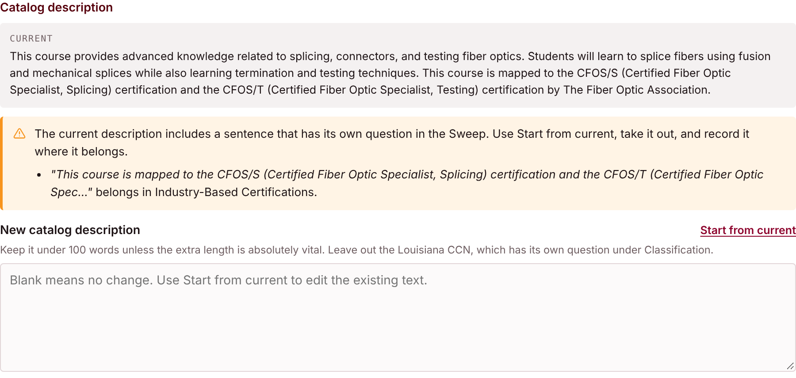
Classification and term availability
Asked for every active course, including confirms. On an update, a new CIP code is checked against the NCES CIP 2020 list, and a blank keeps the current one. Confirm as written keeps the CIP code on record, so it shows without a box to type in, and changing it means choosing Update. The Louisiana Common Course Number question records whether the course has a CCN and which one, with a link to the statewide catalog. When the current description names a CCN, the Sweep offers it with Use it. Then term availability and any rotation detail. Not sure is a real answer here. It goes to Academic Affairs for review and does not come back to you.
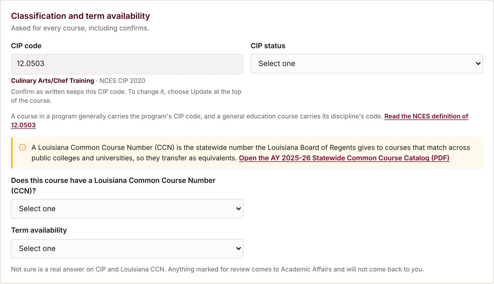
Courses with a Louisiana CCN
The statewide catalog gives each CCN a common title and a description of the minimum content every Louisiana college agrees to cover. BPCC's title and description don't have to match it word for word, but the description should cover that content, and a title that differs from the statewide one should be a deliberate choice. Classification shows the statewide title and description for the course's CCN, so you can compare before you choose a disposition, and the Sweep flags a title or description that reads quite differently, or a CCN that another BPCC course also names.
The CIP code
A CIP code is the six-digit code from the Classification of Instructional Programs, kept by the National Center for Education Statistics (NCES). Banner holds one for every course, and it tells state and federal reporting what the course teaches. The first two digits name the broad field, so codes starting with 51 are health professions and codes starting with 52 are business.
Which code a course should carry
- A course in a program generally carries the program's CIP code, the field the program prepares students for. Every WELD course, for example, carries 15.0614, Welding Engineering Technology/Technician.
- A general education course carries the code for its own discipline, whichever programs require it. ENGL 101 carries 23.1304, Rhetoric and Composition, though students in nearly every program take it.
A course that serves more than one program, or one you can't place, is a question for Dr. Megan Bange.
How to check it
- Read the code on record.Under Classification, the Sweep shows the course's CIP code with its NCES title.
- Compare it with the rule above.For a program course, check it against the program's code. Your Dean or Dr. Bange can tell you the program's code if you don't have it.
- Look it up if you're unsure what it covers.Under the CIP code, Read the NCES definition opens that code's page on the NCES CIP 2020 site, with its definition and examples. The site also finds any code by keyword. If the definition reads like another field entirely, such as a welding course whose code NCES titles Dental Assisting, the code is wrong.
- Answer CIP status.If the code fits, choose Confirmed correct. If it doesn't, choose Update and enter the right code. The Sweep checks it against CIP 2020 and adds a red note asking you to work with Dr. Bange before you submit. If you can't tell, choose Not sure, and Academic Affairs reviews it.
Confirm as written keeps the CIP code on record, with no box to change it. If the code doesn't fit, choose Update instead.
Repeating for credit
Some courses can be taken more than once, with each completion adding to the credit a student earns. An ensemble that students join every term, or a special topics course with a new topic each time, is the usual example. This question asks whether students may do that with your course. It is not about retaking a course to replace a grade, which the College's grade replacement policy covers for every course.
Answer Yes, No, or Not sure. Yes asks how many times in all a student may take the course for credit, counting the first time, so a course students may take four times can be repeated three times. It also asks for the most credit hours a student may earn from the course, which you can leave blank when the number of times sets the limit, and for any condition the catalog should state, such as a different topic each time. The Reads as line shows how your answers will read. If the description says the course may be repeated for credit, that sentence comes out of the description and is recorded here instead.
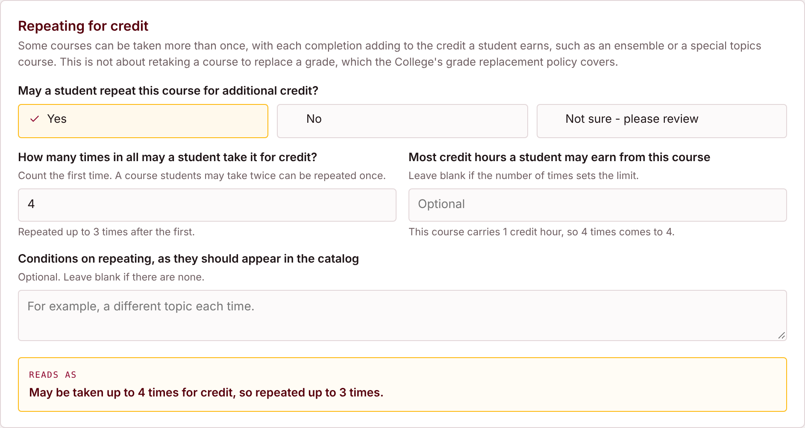
General education competencies
BPCC's general education competencies span the whole curriculum rather than any one course. Check each associate degree competency students build in this course, then at least one of its catalog measures, so each competency can be traced to the courses that embed it. The academic certificate competencies follow, by name. None of these is a valid answer for either set.
Computer Literacy now carries measures on using AI tools responsibly and transparently, evaluating AI-generated output, and protecting private information when using AI tools, and the Skills certificate competency names the appropriate use of AI tools. The Deans have asked Program Directors to identify the courses where AI is present, and these measures are how the college records it.
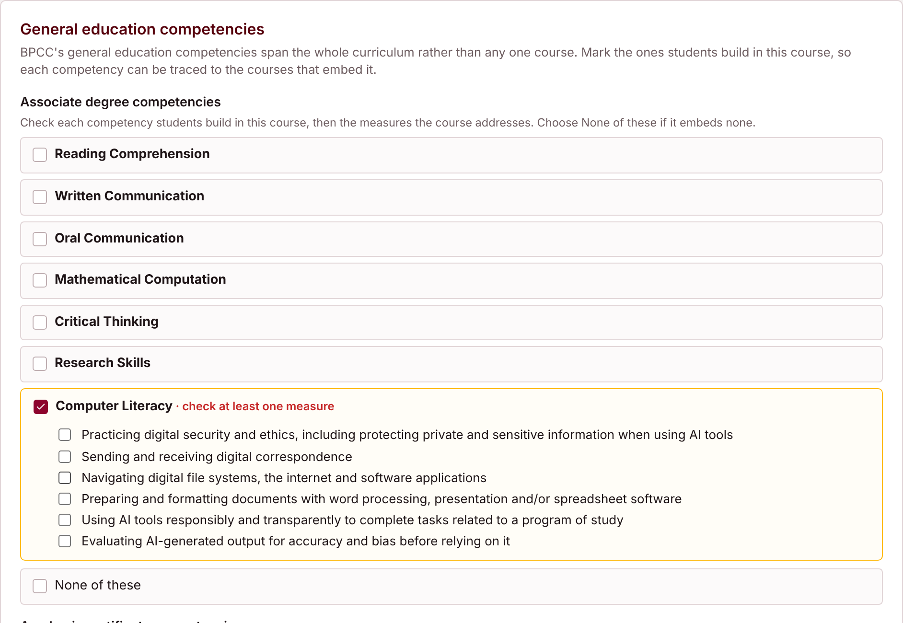
Location
One Yes or No for each setting: the Bossier City, Natchitoches, and Sabine Valley campuses, dual enrollment, online, correctional, and any other site. For the three campuses, Yes means the course is taught face-to-face on that campus. For dual enrollment, Yes means the course is taught face-to-face on location at a high school, not that dual enrollment students can take it. Mark the rest No fills in the remaining answers once you have marked the Yes ones.
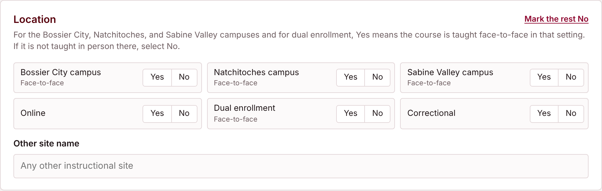
Enrollment restrictions and special approvals
One Yes or No per restriction (age, program admission, background check, drug screen, immunization, physical requirements, other). Every Yes asks for the wording the catalog should show. Then check which special approvals registration requires, one box per Banner code, or None of these. A section built in Banner can carry only one special approval, so if you check more than one the Sweep asks which one sections should carry.
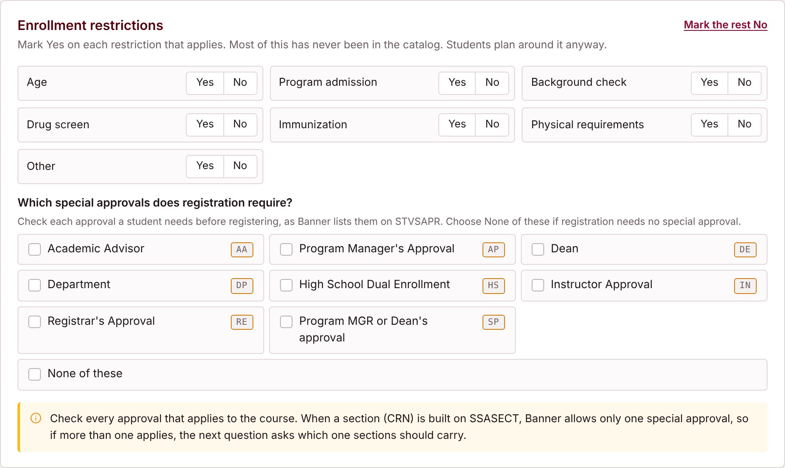
Course fees
The fees Banner holds for the course appear with their detail code, description, and amount. Confirm them as listed, or choose Change needed to mark a fee for increase, decrease, or removal, or to add a new fee with its amount and rationale. The answer flags the change on the report. The Sweep itself never changes a fee, whether it goes up or down, is added, or is removed. New fees and increases need a memo from the Dean through Dr. Palermo and Chancellor Bateman to Adam Dansby before they take effect. Reductions and eliminations need no memo, but you will need to work with Adam Dansby directly on them.
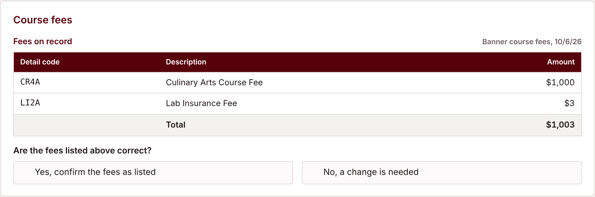
Industry-Based Certifications
There is no central record of this, so everything here is new information. For each IBC: its name and issuing body; whether this course prepares students on its own or is the final course in a series (an IBC that takes a series is listed on the final course only, and that course names the earlier ones); how the exam fits the course, in six plain choices; whether it is on the LCTC System IBC Master List; whether it is on the PLA matrix for this course; how the exam cost is covered; and what the exam costs per student. Add as many IBCs as the course carries.
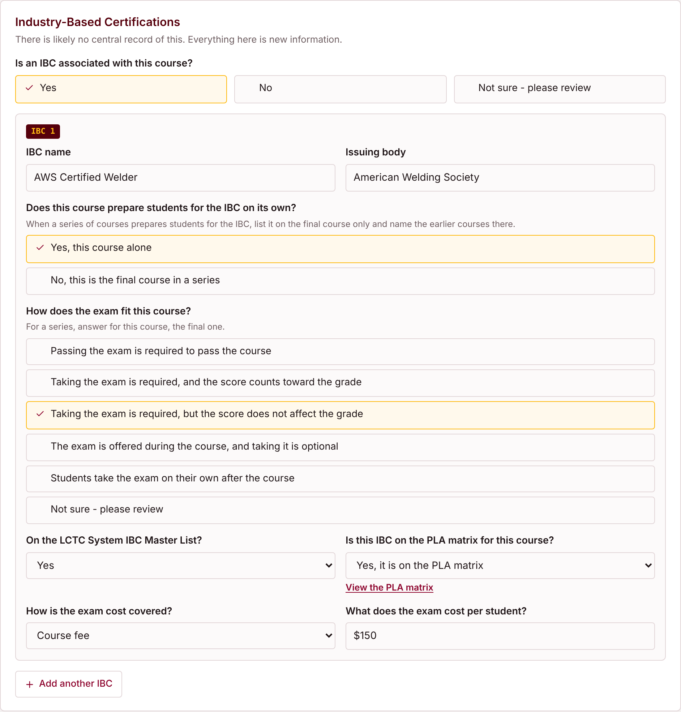
Laboratory withdrawal policy (lab courses)
Does a student withdrawal from a corequisite lecture mandate withdrawal from this laboratory? Answer for students who take the lecture at the same time as the lab.
Retirement (retirements only)
Last term offered, the reason, a replacement course if there is one, whether an active program still requires the course, students in progress, and a teach-out note. Retiring a course an active program still requires is a program change, and it comes to Academic Affairs as one.
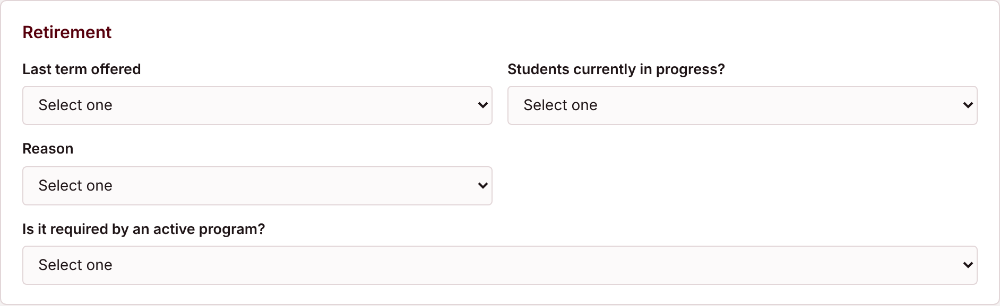
Sign and save
Your name, your BPCC email, the date, and any notes to Academic Affairs. Notes print on the PDF. The name and email carry to the next course for the rest of your visit.
7Prerequisites and corequisites
The prerequisite builder asks more of you than any other part of the Sweep, and a rule that reads wrong can keep a student out of a course they are ready for, or let one in before they are. This section sorts out which kind of requirement fits, then walks through building it.
Three ways one course can depend on another
The student finishes the other course, or meets a placement score, before this one begins.
The student can finish the other course in an earlier term or take it the same term. Either way works.
Both courses are taken the same term, and passing one in an earlier term doesn't count.
Which one fits?
Start with the first question. A yes is your answer. A no moves down to the next question.
Building a prerequisite in the Sweep
Choose Update, then find the Prerequisite row in Update detail. The Banner logic sits at the top under Current, with the builder below it. This is BLGY 206, which needs one chemistry course and one biology course, just after Start from current.
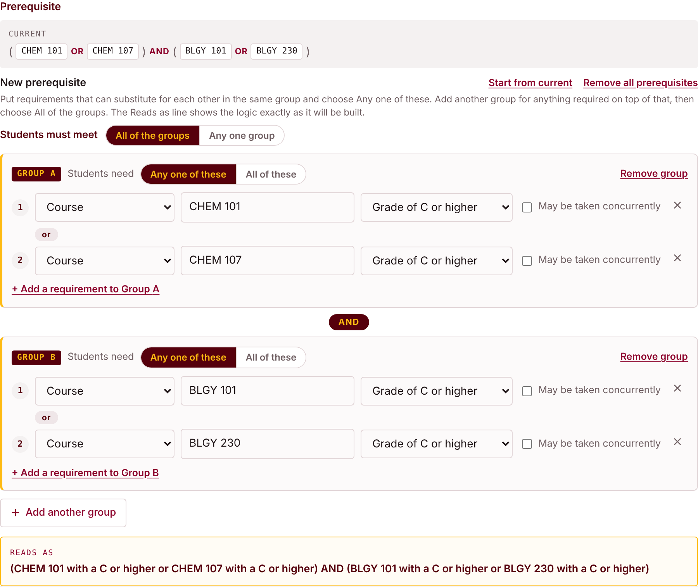
1 2 3 4 5 6 7 8Think in groups
Every prerequisite in the Sweep is built from groups, at two levels. Inside a group, requirements that can stand in for each other go under Any one of these, and requirements that all apply go under All of these. Between groups, All of the groups means students meet every group, and Any one group means one is enough. Put the rule into words first, then build it, as in these BPCC courses as Banner holds them today.
| Course | The rule in words | How to build it |
|---|---|---|
| ENGL 102 | ENGL 101 first | One group with one course |
| ENGL 101 | Any one of five placement scores | One group, Any one of these, with a Test score requirement for each (ACT English 18, for one) |
| COMM 162 | Both COMM 160 and COMM 216 | One group, All of these |
| BLGY 206 | One chemistry course and one biology course | Group A, Any one of these: CHEM 101, CHEM 107. Group B, Any one of these: BLGY 101, BLGY 230. Students must meet All of the groups. |
| ALHT 115 | BLGY 110, plus either BLGY 120 or BLGY 230 | Group A: BLGY 110. Group B, Any one of these: BLGY 120, BLGY 230. Students must meet All of the groups. |
Read the Reads as line the way you would explain the rule to a student. If it says what you mean, the logic is right. A rule that needs more than two levels goes in as the closest version, with the full rule in Notes to Academic Affairs.
What Start from current brings over
Start from current copies Banner's logic into groups, so most of the time you only adjust what changed. Course requirements arrive at C or higher, and test scores arrive with their Banner code and minimum score. A placement measure with no test code, such as high school GPA, can go in as an Other requirement.
When Banner mixes and with or without parentheses, the intended rule isn't certain, so Start from current puts every requirement in one group with an orange note. Sort them into groups that say what you mean and choose the connectors. Twelve courses are like this, MATH 250 among them.
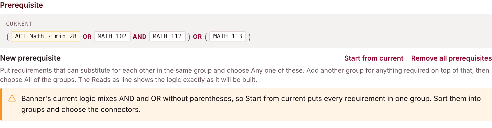
Concurrent enrollment
The Current column can't show whether a requirement may be taken the same term. The Banner extract the Sweep uses lists each prerequisite course without that detail, so Start from current brings every course requirement over with May be taken concurrently unchecked, even where Banner allows the same term today.
That matters most for labs. Of the 36 lab courses in the Sweep, 28 list their lecture as a prerequisite under Current, BLGY 101L among them. If students may take the lecture the same term as the lab, that requirement is concurrent.
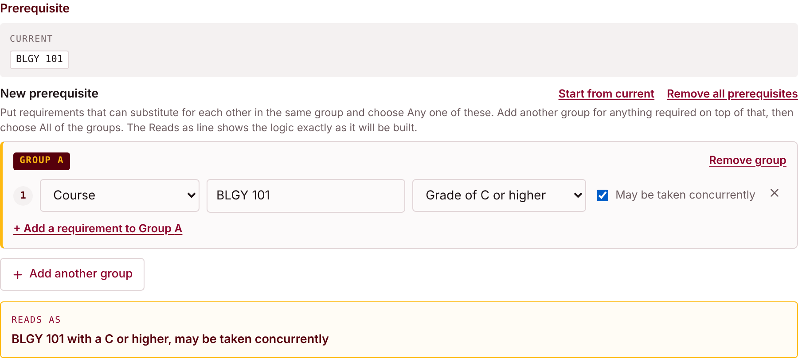
Whenever you update a prerequisite, check May be taken concurrently on every requirement students may take the same term. Otherwise the report says students must finish it first, and the Registrar's Office has no way to know you meant otherwise. If the same-term option is the only thing missing, it is still worth an update. Where Banner already allows it, the Registrar's Office simply finds nothing to change.
If two courses each list the other as a prerequisite, no student could start either one unless at least one of them may be taken the same term. When you see that, mark the requirement concurrent, or, if the two are always taken together, make them corequisites instead.
Corequisites, the exception
A corequisite means the two courses are taken in the same term, and passing one in an earlier term doesn't count. Most courses don't need one. They appear mostly in programs whose courses run as a set each term, such as nursing.
A corequisite on a course applies to every section of that course, so before adding one, ask whether every student in every section takes the other course that same term. A corequisite also binds only the course it is on. List it on both courses only when each one truly requires the other.
MATH 102 and ENGL 101 run traditional sections with no lab, alongside sections paired with MATH 012L or ENGL 011L, where L01 goes with L01. That pairing is added to each section (CRN) when the schedule is built, so MATH 102 and ENGL 101 carry no corequisite, and there is nothing to add for them in the Sweep. The labs are different, because every section of MATH 012L needs MATH 102. That is why MATH 012L lists MATH 102 as a corequisite on the course.
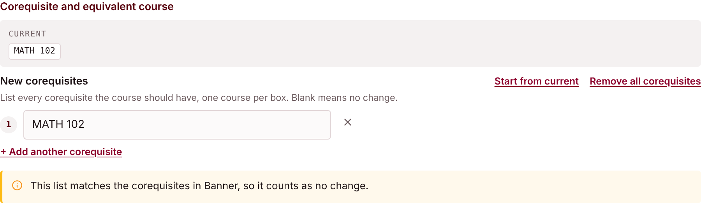
For lab courses, the Laboratory withdrawal question in section 6 records whether withdrawing from the lecture means withdrawing from the lab.
- Read the Reads as line as a student would.
- Check May be taken concurrently wherever the same term works.
- Add a corequisite only when every section needs it.
- Use a Test score requirement for placement, with the minimum score.
- Leave a row blank when it is right as it stands. Blank means no change.
8When Confirm as written is unavailable
For some courses the Confirm as written tile is greyed out, with a note explaining why. There are four reasons, and each has a straightforward path.
| Reason | What to do |
|---|---|
| The description names the Louisiana CCN | The CCN is moving out of descriptions and onto its own line in the new catalog. Choose Update, and under Catalog description click Start from current. The Sweep fills in the current description with the CCN sentence taken out. Then record the number in the CCN question (the Sweep offers it with Use it). This applies to 132 courses, most of them in AHSS and STEM. |
| The CIP code is missing or not in the NCES list | Choose Update and enter a valid CIP code under Classification. A new CIP carries an accreditation note, so work with Dr. Megan Bange before submitting. Or choose Retire. |
| The course carries a retired schedule type or instructional method (WOL or WEBOL) | Choose Update. The update report lists the removal for the Registrar even if nothing else changes. |
| Banner lists more than one grade mode | A course carries only one of Standard, Satisfactory/Unsatisfactory, and Pass/Fail, with Audit allowed alongside. Choose Update and pick one under Grade mode, which is enough for the update on its own. This applies to 12 courses. |
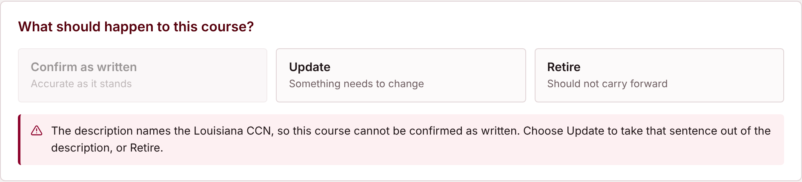
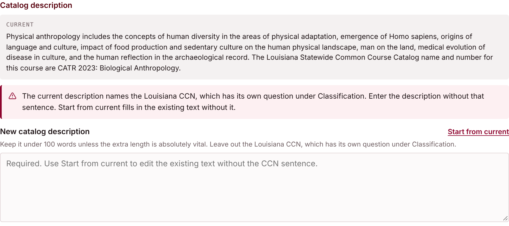
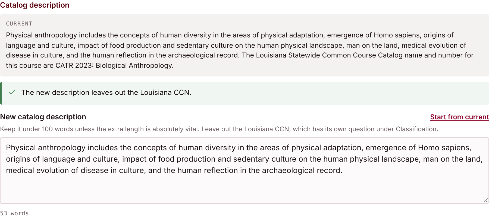
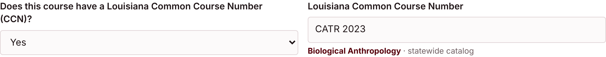
An update like this changes nothing else about the course. Leave every other field blank, and the report will show the old description beside the new one with the CCN on its own row.
A prerequisite, a cross-listing, a term note, or anything else in the description that has its own question takes the same path. The Sweep flags each one, and Confirm as written stays available for those courses with a warning. Section 6 lists where each one goes.
9After you submit
Each submission moves through four steps. The Dean of your division sees it first.
If your Dean returns a course, the note comes straight to you. If the Registrar's Office or Degree Works can't make a change as written, the course goes to Joe Brownlee, who works with you on what to fix. Section 11 covers how to resubmit, and the resubmission goes to your Dean first. Items marked Not sure go to Academic Affairs for review and do not come back to you.
Reading the status in the Sweep
The Sweep shows where each course's report is, updated from the submission form every 15 minutes. Once you submit a course, a tag under its course code names the step where the report waits now, and the mark beside it shows whether it is moving, returned, or complete. The course records themselves stay as Banner had them on October 6, 2026, so every course is reviewed against the same snapshot.
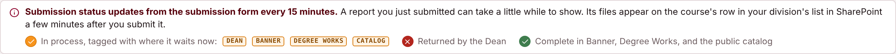
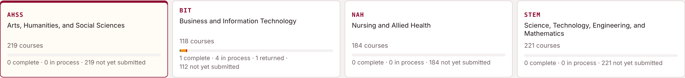
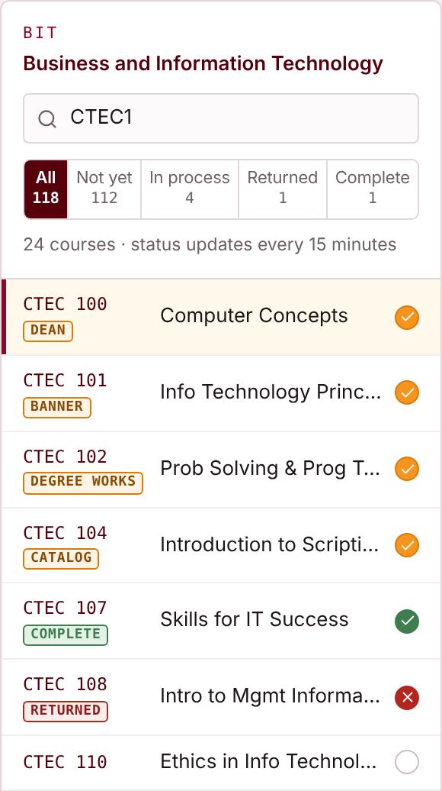
- DEAN
- With your Dean for review.
- BANNER
- Your Dean approved it, and the Registrar's Office is making the changes in Banner.
- DEGREE WORKS
- Banner is done, and Rachael Carter is entering it in Degree Works.
- CATALOG
- Banner and Degree Works are done, and Joe Brownlee is updating the public catalog.
- RETURNED
- A red X. Your Dean returned it, and the note went to the email on the report (section 11).
- COMPLETE
- A green check. Finished in Banner, Degree Works, and the public catalog.
The filter above the course list shows just the courses not yet submitted, in process, returned, or complete. Open a submitted course and the note under its record names the step and the report's submission ID. If the Registrar's Office or Degree Works sends a course back, it keeps its BANNER or DEGREE WORKS tag while Joe Brownlee works out the change with you.
A course shows up in the Sweep within about 15 minutes of being submitted, but the Sweep never holds your files. Your division's SharePoint list keeps the PDF and the submission file for every course, and both arrive there on their own a few minutes after you submit. The submission file is what you load to fix a returned course.
10Your division's list in SharePoint
Each division has its own list on the Course Inventory Sweep site in SharePoint, with a row for every course in the division. It is where the PDF and the submission file for each course you submit are kept, and where your Dean and colleagues can see what has been submitted and what is still to go. The files stay with the division instead of in one person's downloads folder.
Open your division's list with its button below, and bookmark it for next time. The Sweep links to it too, under Open the submission form once you save a course. Each list is open to everyone in its division who works on the Sweep, from the Dean and Assistant Dean to the Program Directors and support coordinators, and they all work in the same list. If your list does not open for you, let Joe Brownlee know and he will add you.
The list at a glance
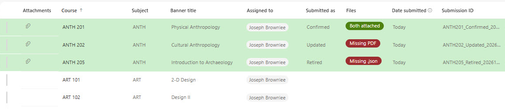
1 2 3 4 5 6The tabs at the top right of the list change what it shows. My courses shows only the courses assigned to you and is the quickest place to start. All Items lists every course in the division, and By subject groups them by subject. Still to go lists the courses with nothing recorded yet, and Submitted, under the » at the end of the tabs, lists those already recorded, newest first.
What arrives after you submit
There is nothing to record. A few minutes after you click Submit on the submission form, the PDF and the submission file arrive on the course's row in your division's list, attached under Report files and named by the submission ID. The row fills in at the same time.
- Submitted as
- Confirmed, Updated, or Retired, from the report. The row turns green.
- Date submitted and Submitted by
- The day you submitted the form, and the person whose email is on the report.
- Submission ID and Files
- The report's ID, and Both attached once the two files are on the row.
Notes is still yours for anything worth keeping. If a course you submitted has nothing on its row after about 15 minutes, let Joe Brownlee know, with the course and its submission ID. The form keeps a copy of both files, so nothing is lost while he looks.
Resubmitting a returned course
When you resubmit a course (section 11), the new PDF and submission file arrive beside the first pair, so the course keeps a record of both reports. Submitted as, Date submitted, and Submission ID move to the newest report, and Notes records which report it replaces.
For Deans and Assistant Deans: assigning courses
Choose Edit in grid view at the top of the list. Click a course's Assigned to cell, type the Program Director's name, and pick them from the suggestions. Choose Exit grid view when you're done. Each Program Director then finds their courses under My courses.
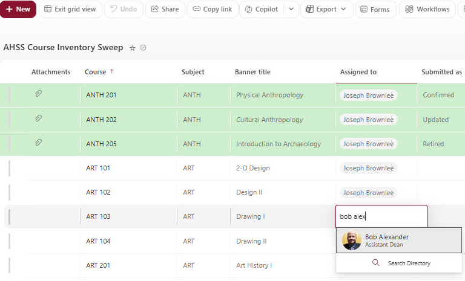
1 2 3Several courses at once
Click a cell that already has the Program Director's name and press Ctrl+C. Click the first Assigned to cell you want to fill, hold Shift, and click the last one to select every cell in between. Press Ctrl+V, and the name fills them all. On a Mac, use Command in place of Ctrl. The list is sorted by course, so a program's courses with the same prefix sit together and are quick to select.
11Fixing a returned course
This is what the submission file is for. When a course comes back, you do not start over. A course your Dean returns shows a red X and RETURNED in the Sweep's course list, and the Dean's note comes to the email on the report.
- Check your division's list in SharePoint.Open the course's row. The submission file, ending in _submission.json, is attached there beside the PDF and named by the same submission ID. The returned course's note in the Sweep names the file, and section 10 has a button for each division's list.
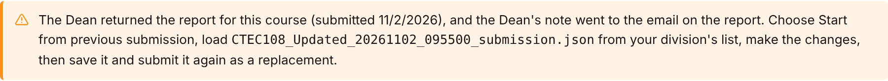
A returned course's note names the submission file to load. - Click Start from previous submission in the Sweep's header, and choose the file.The Sweep opens that course, restores every answer and your name, and marks the next report as replacing the one you saved, with the earlier ID filled in.
- Change what was asked, then save and submit again.The new report says at the top which submission it replaces, so Academic Affairs keeps the right one.
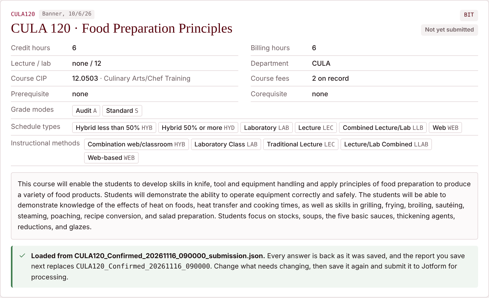
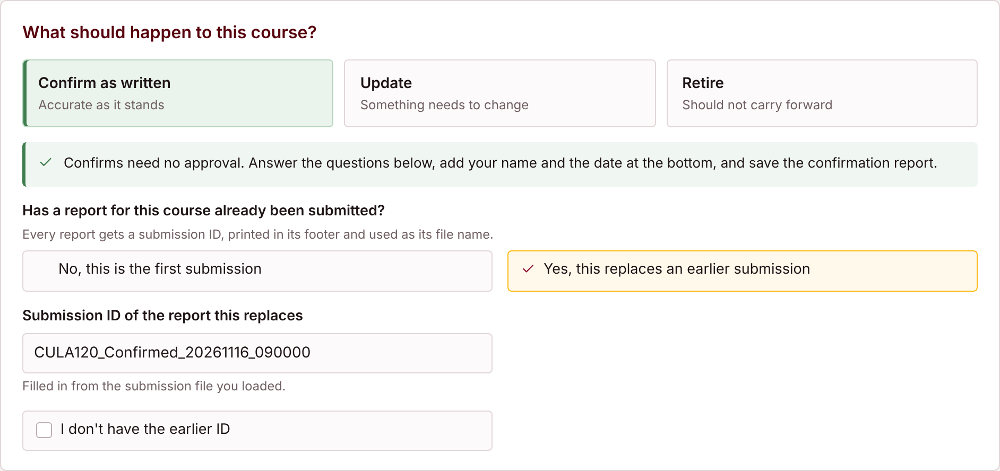
If you would rather start the course fresh than load the file, choose a disposition as usual. Because the course has a report on record, the Sweep answers the submission question for you and fills in that report's ID.
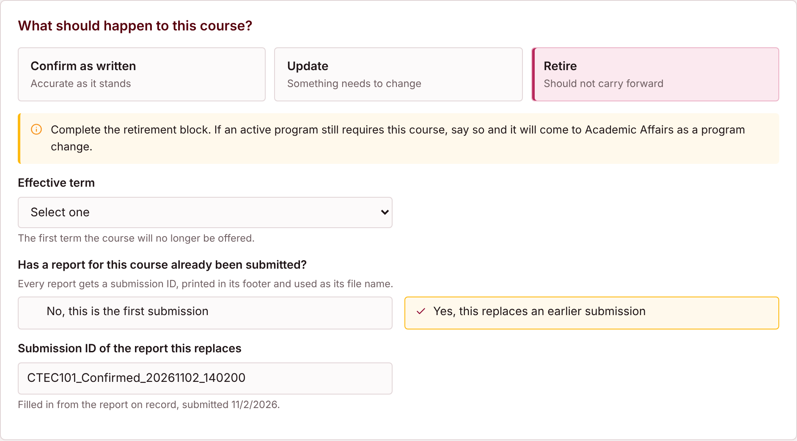
The Sweep checks the file as it loads. A choice that is no longer offered comes back blank, and if the course's fees on record have changed since the file was saved, a note asks you to mark them again. A file from another course, or a file that is not a submission file, is refused with a plain message and nothing changes.
12Common questions
- Which courses are mine?
- The courses in the programs you direct. The Sweep lists courses by division rather than by program, so work from your program's plan and confirm the list with your Dean or Assistant Dean. A course shared across programs needs one review, and the Dean of the division where it lives assigns it.
- Can I come back later and pick up where I left off?
- Yes, course by course. Every course you have saved and submitted is done. The Sweep itself starts fresh each visit, so a course left half-answered starts over. The Still to go view in your division's list and the status filter in the Sweep show where to pick up.
- Why two files?
- The PDF is the readable report that your Dean, the Registrar, and Academic Affairs work from. The submission file is the same answers in a form the Sweep can read back, which is what lets you fix a returned course without retyping it and lets Academic Affairs keep a machine-readable record of every course reviewed. The form requires both.
- One of my files did not save.
- The report is still saved. The panel at the bottom shows the file that was not saved with a Try again button, and the form button stays in place with a note that the form needs both files. If nothing will save, open How this works and run the download check (section 3). When it cannot save its test files either, the computer is stopping downloads, so use another one and let Joe Brownlee know which.
- What are the CourseSweep_Test_Passed_DELETE files in my downloads?
- They come from the download check and only show that your computer can save the Sweep's files. Delete them, and never attach them to the submission form.
- The Sweep says the files no longer match my answers.
- You changed something after saving. Save again. If the earlier files were already submitted, choose Mark it as replacing so the new report names the old one. If they were not, leave it as a first submission and discard the old files.
- I do not have the earlier submission ID.
- Once Academic Affairs has a report for the course on record, the Sweep fills in its ID for you. If it does not, check I don't have the earlier ID on the submission question. The report says so, and Academic Affairs matches it to the earlier report by course.
- What is the difference between the red list, the orange warnings, and the red notes?
- The red list under Before the report can be saved holds answers that are required; the save button appears when it is empty. Orange warnings are advice (a description over 100 words, an email outside bpcc.edu, a question left unanswered) and never stop a save. The red Accreditation implications notes appear for credit hour and CIP changes and ask you to work with Dr. Megan Bange; they do not stop a save either.
- Is Not sure a real answer?
- Yes, on CIP, the Louisiana CCN, an IBC's Master List status, and how an IBC exam fits the course. Anything marked for review comes to Academic Affairs and will not come back to you.
- When is my deadline?
- Every course review is due by Thursday, December 10 at 4:30 p.m. Central, the day before graduation. Your Dean may set an earlier date for your division, so check with them. The countdown at the top of the Sweep shows the time left.
- What belongs in a course description?
- What the course covers, in a few plain sentences that hold true for every section in every term. Prerequisites, cross-listings, hours, term notes, admission requirements, fees, and certification exams each have their own question in the Sweep, and a description that carries one of them needs an update. Section 6 lists where each one goes, with a before-and-after example.
- Does Confirm as written need approval?
- Beyond your Dean's review, no. It still goes through the chain so that any new information it carries, such as locations or competencies, reaches Banner, Degree Works, and the catalog.
- Do I attach my files in SharePoint?
- No. Once you submit the form, both files reach the course's row in your division's list on their own within a few minutes, with Submitted as, Date submitted, and Submitted by filled in (section 10). You only attach them to the submission form.
- Can I use my phone?
- The Sweep works at phone width, but a laptop or desktop is easier, because each course ends with two files that you attach to the submission form.
- Can I change the colors?
- Yes. The Theme button in the header offers High contrast for projectors and bright rooms, Night for low light, and Color-safe for color vision. The reports look the same in every theme.
- Where do fee changes go?
- On the report, as a flag. The Sweep does not change fees. New fees and increases need the memo described in section 6; reductions and eliminations go to Adam Dansby directly.
13Who to contact
Questions? We're here to help!
The Sweep, submissions, returns, and status
Accreditation Liaison
Credit hour and CIP changes, accreditation implications
Course fees, billing hours, and the fee memo
If you'd like to work through a few submissions together or talk through a question, Joe Brownlee and Dr. Megan Bange are happy to meet. Book with Joe for anything about the Sweep and your submissions, or with Dr. Bange for credit hour and CIP changes and accreditation questions. Pick a time that works for you, and the call is set up in Teams.